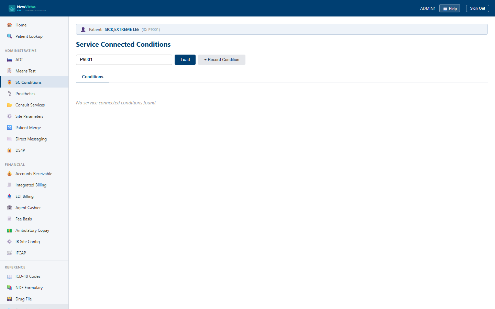

Manual › Administrator › SC Conditions
Service Connected Conditions
This screen tracks a veteran's service-connected (SC) and non-service-connected (NSC) conditions — each condition's disability percentage, rating decisions, combined rating, appeal status, C&P exams, Permanent & Total and SMC status. It corresponds to VistA's service-connected / rated-disability registration data.
Open SC Conditions and load a patient
- In the sidebar, under Administrative, click SC Conditions (or go to
/service-connected). - In the Patient ID field, type the patient ID (e.g.
P9001). - Click Load (or press Enter) to list that patient's conditions.

What you see
- Conditions tab — each condition with its ICD-10 code, disability percentage, an SC/NSC marker, effective date, and a status badge.
- Status badge — green for ACTIVE, neutral otherwise.
- Detail tab — opens when you click a row; shows combined rating, P&T, SMC level, appeal status, rating-decision and exam dates, plus the section forms.
Record a new condition
- Click + Record Condition to open the form.
- Enter the Condition (e.g. Hearing Loss, Bilateral) and optional ICD-10 diagnosis code.
- Set the disability percentage, whether it is service-connected, the effective date, and any affected extremity.
- Click Record. The condition appears in the list.
Work a condition's detail
Click any row to open the Detail tab, which stacks several section forms:
- SC Percentage and Rating Decision — set the percentage and record the rating decision date/ID.
- Rated Disabilities — list and add individual rated disabilities (condition, rating %, effective date, diagnostic code, static flag).
- Calculate Combined Rating — one click computes the VA combined rating from the rated disabilities.
- Appeal Status, C&P Exam, Permanent & Total, and SMC — track appeals, exams, P&T, and special monthly compensation.
- Notes — add an authored note (the author defaults to the logged-in provider).
Combined ≠ sum
The combined rating is not the arithmetic sum of the individual ratings —
click Calculate Combined Rating to apply the VA combined-ratings
formula across the rated disabilities you've entered.